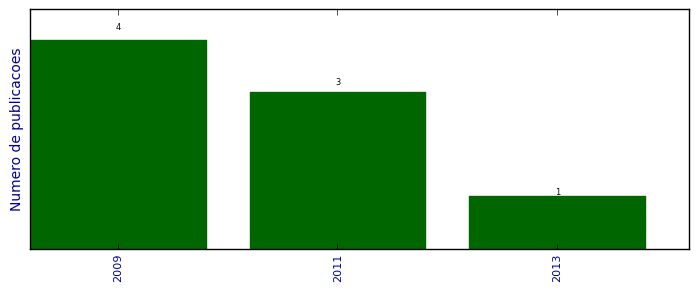

UFSM - Análise do Lattes
Artigos completos publicados em periódicos

Número total de itens: 8
(A1: 0, A2: 0, B1: 2, B2: 0, B3: 0, B4: 3, B5: 0, C: 0, Qualis não identificado: 3)
Legenda Qualis:
- Publicação para a qual o nome exato do Qualis foi identificado: Qualis <estrato>
- Publicação para a qual um nome similar (não exato) do Qualis foi identificado: Qualis <estrato> (nome similar)
- Publicação para a qual nenhum nome do Qualis foi identificado: Qualis não identificado (nome usado na busca)
2013
| 1. | KOZAKEVICIUS, A. ; SCHMIDT, Alex A.. Wavelet transform with special boundary treatment for 1D data. Matemática Aplicada e Computacional (Cessou em 1997. Cont. ISSN 1807-0302 Computational Applied Mathematics),. p. 447-457, 2013.  [ citações Google Scholar | citações Microsoft Acadêmico | busca Google ] Qualis: Não identificado (Matemática Aplicada e Computacional (Cessou em 1997. Cont. ISSN 1807-0302 Computational Applied Mathematics),) |
2011
| 1. | Díaz, A. A. ; RODRÍGUEZ-NÚÑEZ, J. J. ; SCHMIDT, A. A. ; TIFREA, I.. Superconductivity in Itinerant Ferromagnetic Systems. Journal of Superconductivity and Novel Magnetism,. p. 1, 2011. [ citações Google Scholar | citações Microsoft Acadêmico | busca Google ] Qualis: B4 (Journal of Superconductivity and Novel Magnetism) |
| 2. | ROMERO, R. ; RODRÍGUEZ-NÚÑEZ, J. J. ; SCHMIDT, A. A.. Towards a phase diagram for La1-xSrxCuO4 High-Tc superconductor with two competing order parameters. Faraute de Ciencias y Tecnología. v. 6, p. 1, 2011. [ citações Google Scholar | citações Microsoft Acadêmico | busca Google ] Qualis: Não identificado (Faraute de Ciencias y Tecnología) |
| 3. | SCHMIDT, Alex A. ; Perali, Andrea ; Bianconi, Antonio ; José Jesús Rodríguez-Núñez. Two-Bands Superconductivity with Intra- and Interband Pairing for Synthetic Superlattices. Journal of Superconductivity and Novel Magnetism (Online). v. 24, p. 1213-1218, 2011. [ citações Google Scholar | citações Microsoft Acadêmico | busca Google ] Qualis: B4 (Journal of Superconductivity and Novel Magnetism) |
2009
| 1. | KOZAKEVICIUS, A. ; SCHMIDT, Alex A.. Splitting Wavelet Method for solving 2D Conservation Laws. AIP Conference Proceedings. v. 1168, p. 1158-1161, 2009. [ citações Google Scholar | citações Microsoft Acadêmico | busca Google ] Qualis: Não identificado (AIP Conference Proceedings) |
| 2. | MONDAINE, L ; MARINO, E C ; SCHMIDT, A. A.. Vanishing conductivity of quantum solitons in polyacetylene. Journal of Physics. A, Mathematical and Theoretical. v. 42, p. 055401, 2009. [ citações Google Scholar | citações Microsoft Acadêmico | busca Google ] Qualis: B1 (Journal of Physics. A, Mathematical and Theoretical (Print)) |
| 3. | Rodríguez-Núñez, J J ; Schmidt, A A ; GIMÉNEZ, V K. Superconductivity and the isotope exponent versus the number of carriers in a changing hopping triangular lattice. Superconductor Science and Technology. v. 22, p. 075027, 2009. [ citações Google Scholar | citações Microsoft Acadêmico | busca Google ] Qualis: B1 (Superconductor Science and Technology (Print)) |
| 4. | RODRÍGUEZ-NÚÑEZ, J. J. ; SCHMIDT, A. A. ; CITRO, R. ; NOCE, C.. Critical Temperature and Isotope Exponent in a Two-band Model for Superconducting Fe-pnictides. Journal of Superconductivity and Novel Magnetism. v. 22, p. 539-542, 2009. [ citações Google Scholar | citações Microsoft Acadêmico | busca Google ] Qualis: B4 |
(*) Relatório criado com produções desde 2009 até HOJE
Data de processamento: 11/04/2014 21:41:46